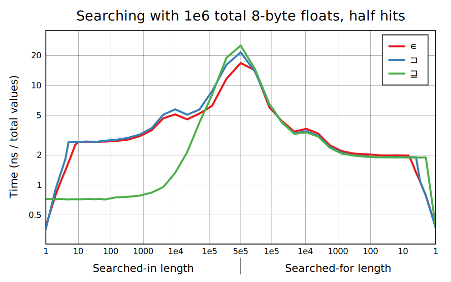
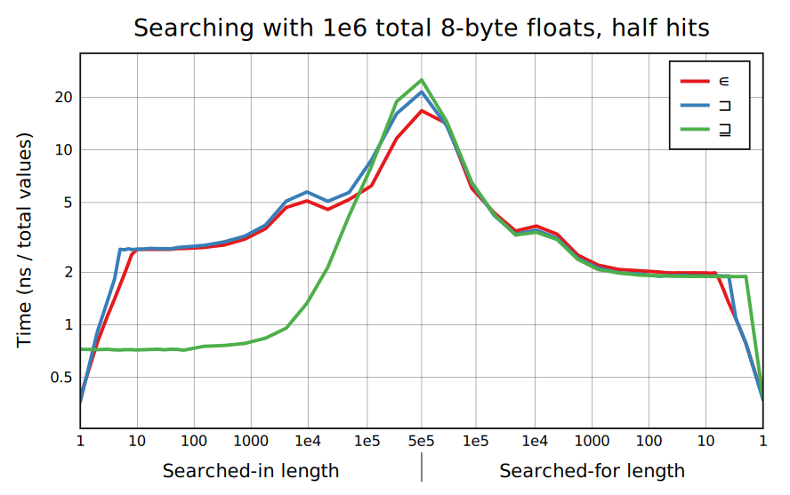

Searching is mostly well optimized, using lookup tables, specialized hash tables, and some SIMD optimizations (x86 only) for when one argument is short. Some cases involving mixed numeric type, or characters, don't have benchmarks here but are substantially slower for now.
Each dyadic search function has a searched-in array (ùï® for ⊐ and ⊒, and ùï© for ∊) and a searched-for array (the other argument): it produces one result for each searched-for cell based on which searched-in cells it matches. Many methods allow the search to be sped up if either argument is short, by building a search structure on that argument. This is more complicated and often slower for a short searched-for argument, and I call this case a "reverse" search. We haven't put as much effort into speeding up the case where both arguments are long.
Reverse searches for ⊐ and ∊ can stop traversing the searched-in argument when all values are found, because the result only depends on the first match. And ⊒ is more symmetrical since a⊒b and b⊒a are just different presentations of the same correspondence, and can stop traversing the longer argument if all elements from the shorter one are exhausted. Stopping before inspecting all values from one argument is called "shortcutting" here.
The graphs below show searches with a million total values split across the two arguments in different ways, so that short searched-in and short searched-for cases both appear. "Half hits" means that half the values in the searched-for argument are found at some index, and is tough on branchy implementations; depending on the application all hits could be more relevant.
Lookup tables handle the general case for 1- and 2-byte elements. A boolean table on 1-byte values fits in vector registers, allowing extremely fast ∊ and reverse ⊐ lookups (requires SSSE3). The stair-step cutouts at the left are from vector binary searches (AVX2). 2-byte reverse lookups, and ⊒ with unbalanced lengths, could be much better.
4- and 8-byte searches are mainly handled with dedicated hash tables optimized for fast lookups (not insertions). The 4-byte searches use CRC32 on x86 for fast hashing. For 4-byte ∊, lookups with a maximum probe length less than 8—practically guaranteed, at these sizes—use vector comparison.
The equal-length case is where hash insertion cost dominates for larger types. BQN does okay, but not nearly as good as unbalanced lookups. Table insertion is much faster and doesn't have scaling issues.
The graphs against overlap fraction look very boring. This is not typical hash table performance! The hash lookup only branches if there's another value in the same hash slot but with a smaller hash, and because there are 1e6 lookups here the search function knows it can afford to make an oversize hash table to keep collisions very low. And hashed ⊒ stops early if all values from ùï® are found, as in the graphs above.
Different numbers of unique values show the impact of resizing hash tables, as well as some caching effects in 2-byte tables.
 
